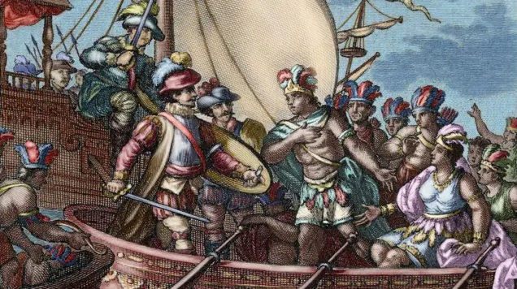
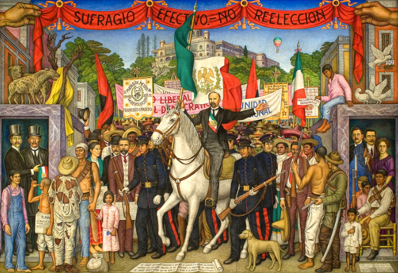
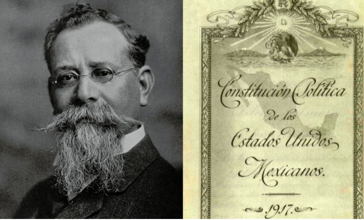

Fundación de México-Tenochtitlan.
1325 →

1521 →
Caída de Tenochtitlan y comienzo de la época colonial.
Grito de Dolores e inicio de la Independencia de México.
1810 →

1910 →
Inicio de la Revolución Mexicana.
Promulgación de la Constitución Política actual.
1917 →

2024
Claudia Sheinbaum asume como la primera mujer presidenta de México.